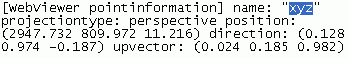

| |
|
Handling named views
You create named views of the published model in the following way,
- Open the model index.html
- Zoom in to the part of the model you want to create the view from.
- Right-click and select Copy location.
- Open any text editor (for example, Notepad) and paste the location information there. Below is an example of location information:

- The default view name is "xyz". Replace it with the desired view name in the text editor.
- Copy the entire location information string in the text editor.
- In WebViewer, right-click on top of the model and select Paste location. The view name appears on the Named views list.
You cannot save the named views in the WebViewer so if you want to access a named view later, you should save the location information string(s) into a separate text file.
When you send the published model to other parties and want them to see your named views, use the Send WebViewer link tool to send them the text strings pointing to the views, see Sending WebViewer links.